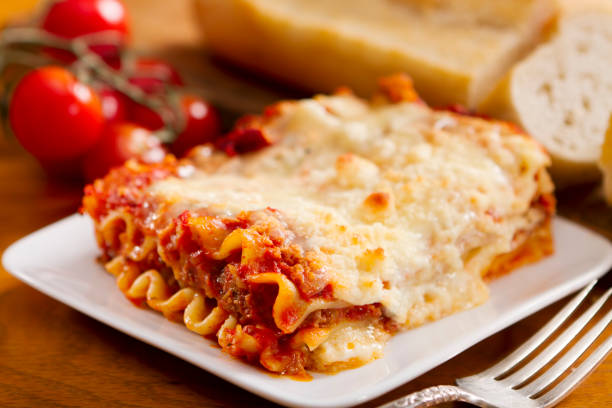

Lasagna Recipe

Description
Lasagna is a classic Italian comfort food known for its rich layers of pasta,
savory meat sauce, creamy béchamel or ricotta, and melted cheese. It’s a hearty and filling dish,
perfect for feeding a crowd or enjoying as leftovers throughout the week.
This recipe features traditional ingredients and layering methods, resulting in a well-balanced,
flavorful lasagna with a golden, cheesy top that’s crisped to perfection in the oven.
Ingredients
- 9 lasagna noodles
- 1 pound ground beef
- 1 onion, chopped
- 2 cloves garlic, minced
- 1 jar (24 oz) marinara sauce
- 15 oz ricotta cheese
- 1 egg
- 2 cups shredded mozzarella cheese
- 1/2 cup grated Parmesan cheese
- Salt and pepper to taste
- Olive oil for cooking
Steps
- Preheat your oven to 375°F (190°C).
- Boil lasagna noodles according to package directions; drain and set aside.
- In a skillet, heat olive oil and cook onions and garlic until softened.
- Add ground beef, cook until browned, then stir in marinara sauce and let simmer for 10 minutes.
- In a bowl, mix ricotta cheese with egg, salt, and pepper.
- In a 9x13 baking dish, spread a layer of meat sauce.
- Add a layer of noodles, followed by ricotta mixture, then mozzarella.
- Repeat the layers until all ingredients are used, finishing with sauce and mozzarella on top.
- Sprinkle Parmesan cheese over the top layer.
- Cover with foil and bake for 25 minutes, then uncover and bake for another 15 minutes.
- Let rest for 10 minutes before serving.
Home Page